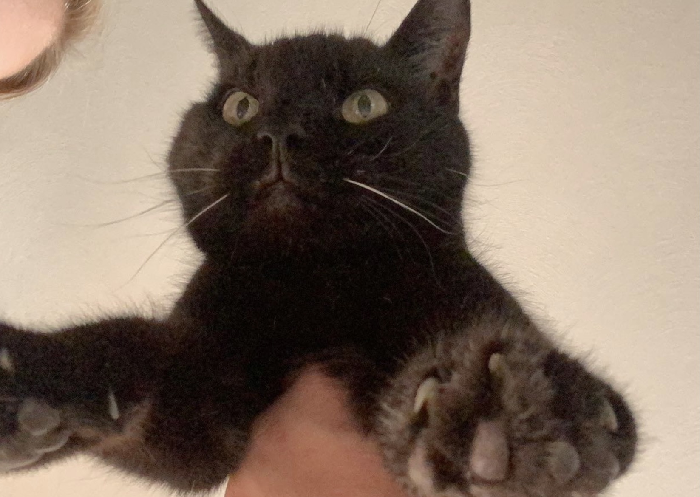

Throughout my life, I've only had cats as pets. Two of them I don't have a lot of memories with, McCarthur and Dusty. The three I do have several memories with I will talk about below.
My cat Blackie has been apart of my life for a long time. I remember being a little kid and going to the pound to give the cats love around Christmas time with my parents. At the time we already had two cats, but my brother and I cried our eyes out until my parents agreed we could take this little black kitten home, which I got the privilege of very creatively naming him, Blackie.
Blackie is still alive today and has no cat siblings anymore. Some of my favorite memories are with Blackie. On my nineteenth birthday, I remember coming home to Blackie who had tucked himself underneath my covers on my bed and was sleeping. My brother and I have also taken Blackie for car rides which he either really enjoys laying underneath my back windshield or has a full blown panic attack and sits on the floor with his mouth hanging open.
Tiger was never our cat to begin with. When I found Tiger as a teenager, he was our neighbor's cat. Our neighbor though would rarely let him into their house, even during our freezing winters. I would go sit in my backyard and call him over to give him food and pets.
Eventually I convinced my mom to let Tiger live in our house. In which in proceeded to steal my neighbor's cat. Tiger lived in our house for about five-ish years until he died of natural causes. One of my things about Tiger is how much he liked to cuddle with me in my bed. I was sad to come home from college last year around Halloween to find out he had passed.
This is the one cat I never had a good relationship with. Despite the fact we had Glowy since I was a baby, she hated me. Glowy was scared of everyone, but she was terrified of me.
Glowy came from my mom's Aunt's attic. Given this, she was was very much a scaredy-cat. When my mom brought her home, she wanted to name her Chloe, but my brother and I misunderstood her for saying "Glowy" because her eyes glowed in the dark. Recently, she also passed away of natural causes.